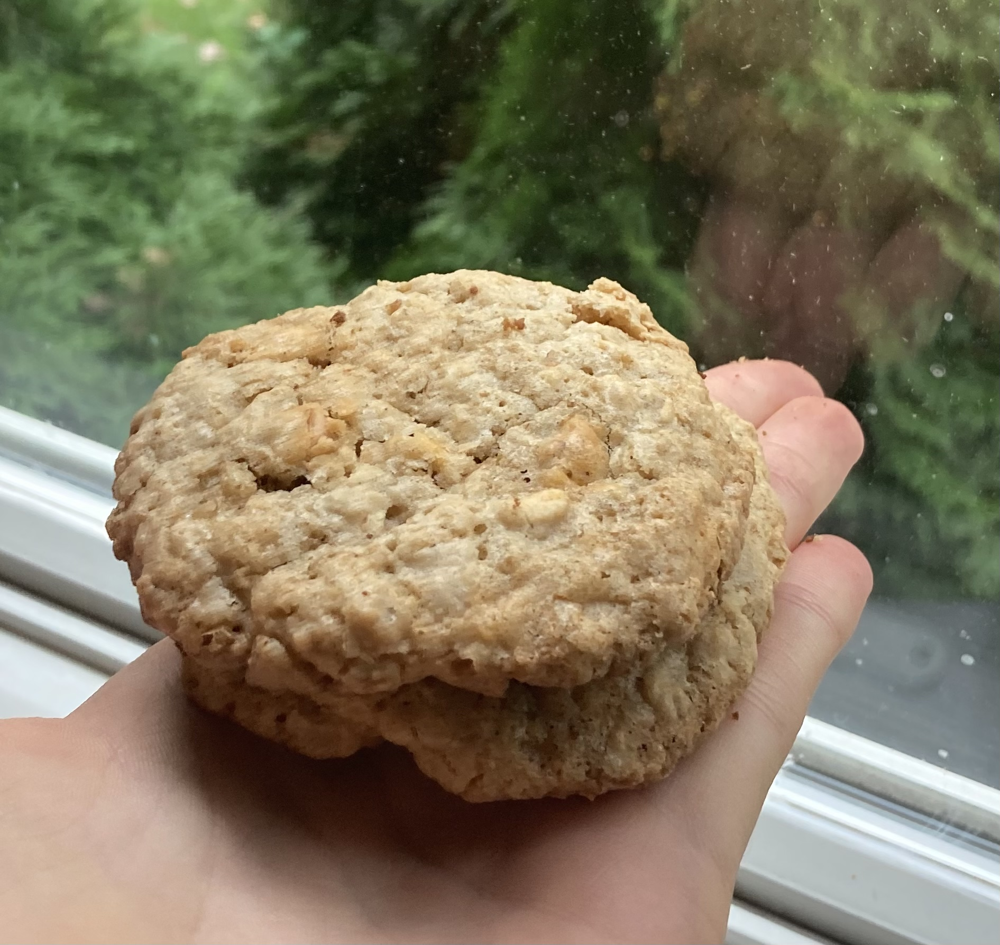

Oatmeal Butterscotch Cookies

Description
Delicious baked goods.
Ingredients
- ¾ cup butter, softened
- ¾ cup white sugar
- ¾ cup packed brown sugar
- 2 eggs
- 1 teaspoon vanilla extract
- 1 ¼ cups all-purpose flour
- 1 teaspoon baking soda
- ½ teaspoon ground cinnamon
- ½ teaspoon salt
- 3 cups rolled oats
- 1 ⅔ cups butterscotch chips
Steps
- Preheat oven to 375 degrees F (190 degrees C).
- In a large bowl beat the butter or margarine, white sugar and brown sugar together. Add the eggs and vanilla, beating well.
- Stir together the flour, baking soda, cinnamon and salt. Gradually add the flour mixture to the butter mixture and stir until blended. Stir in the oats and the butterscotch chips. Drop by teaspoonfuls onto an ungreased cookie sheet.
- Bake for 8 to 10 minutes in the preheated oven, until the edges begin to brown.